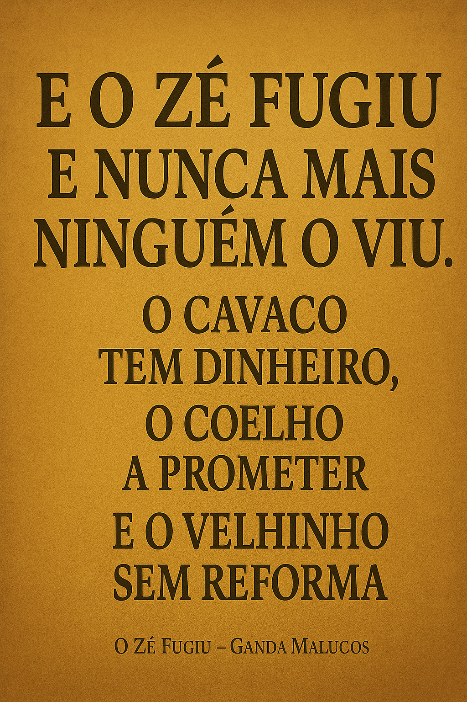

Publicado em 2025-05-22 10:41:08
Há muito, muito tempo, num país à beira-mar endividado, surgiu um homem.
Não era um homem qualquer. Era um visionário. Um mestre do PowerPoint. Um Moisés moderno com cartão do PS. Chamava-se... José Sócrates.
Vestido de fatos justos, sorriso técnico, olhar seguro e cabelo sempre penteado pelo vento da propaganda, Sócrates prometia modernizar Portugal — com obras, obras, e mais obras.
Hospitais, escolas, autoestradas, TGVs, aeroportos, submarinos (não me perguntem porquê) e até uma coisa chamada “Plataforma Logística de Poceirão” — que ninguém sabia ao certo se era real ou um nome de perfume.
O país vibrava.
Os jornalistas aplaudiam.
Os bancos financiavam.
Só havia um pequeno problema: era tudo fiado.
Mas Sócrates tinha um truque:
— “A economia está de boa saúde”, dizia ele.
E se alguém ousasse perguntar “mas e o défice?” — ele respondia com uma obra nova e uma citação de Tony Blair.
Enquanto isso, os bancos distribuíam crédito como se fossem pastéis de nata.
O povo comprava casas em duplex com varandas para a dívida.
E o Estado crescia como fermento em dia de festa: fundações, institutos, assessores, boys, boys dos boys e até boys que não sabiam que eram boys.
E veio o PEC I.
E veio o PEC II.
E veio o PEC III.
E quando chegou o PEC IV… veio a Troika.
Foi então que descobrimos:
— O país estava tecnicamente falido.
Mas calma! A culpa não era de ninguém. Era da “crise internacional” — esse vírus invisível que entra nos orçamentos pela porta da frente e rouba tudo menos as reformas dos ex-governantes.
Depois, Sócrates foi para Paris — estudar filosofia com o cartão da mãe.
(Platão chorou, mas foi de vergonha.)
E o país ficou com a fatura:
Mas calma, há esperança:
Ele regressou.
Fez um livro.
Foi preso preventivamente.
Passou a ser comentador político.
E agora diz que é vítima de uma cabala tão complexa que faria Maquiavel parecer um amador.
Nunca deixes um engenheiro com delírios de grandeza e sede de legado sozinho com um orçamento.
Sobretudo se ele tiver um diploma... tirado ao domingo.
Artigo de Augustus Veritas in Fragmentos de Caos
Um desabafo sobre o silêncio que sufoca quem ousa pensar. Uma reflexão sobre o ato de escrever num país que prefere calar.
Ler o artigo completo